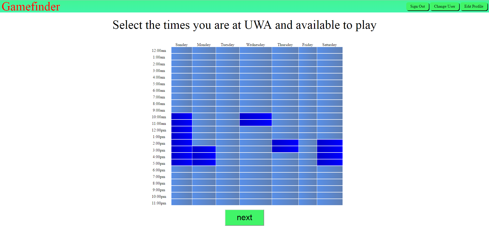

Gamefinder enhances your student experience by helping you organise games and find people to game with
Gamefinder is a free web application which helps you organise games at UWA. When you create an account, you input the games you are interested in, and the times you're available to play. Gamefinder will alert you if someone is arranging a game you are interested in at a time you are available.
